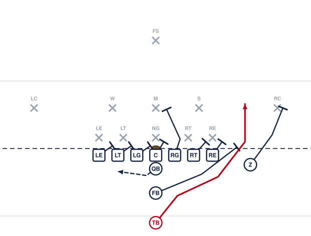

I Sweep Right

Get outside. The fullback and the flanker are both out in front and the tailback has room to run. This is the play that makes them widen out, which is what opens the dive and the iso.
Assignments
- LE
- Block back and cut off pursuit. You are the last one to the ball.
- LT
- Block back. Take the first defender on or inside you. Nobody crosses your face.
- LG
- Block back. Take the first defender on or inside you. Nobody crosses your face.
- C
- Reach the man over you. If nobody is over you, cut off the backside gap.
- RG
- Reach the first defender to the playside. Get your head across his outside shoulder.
- RT
- Reach the man on or outside you. If you cannot reach him, run him past the play.
- RE
- Reach the man over you and turn him in. Let the ball go around you.
- Z
- Block the deepest defender on your side. Run at his outside number and screen him away from the ball.
- QB
- Reverse pivot and hand the ball to the tailback as deep as you can. Then boot away and sell it.
- FB
- Get to the corner ahead of the tailback and kick out the first defender who shows. You are the lead blocker — beat him there.
- TB
- Take the handoff going full speed and get to the corner. Turn up when the fullback blocks somebody, not before. Never stop your feet.
Coaching points
- The tailback is deeper here than the wing is in Tight, so he has time to get outside — but only if he is at full speed by the handoff.
- The fullback has to beat the tailback to the corner. If he is trailing, the play has no lead blocker.
- One rule for the tailback: turn up off the fullback's block. Running to the sideline is how this play loses eight yards.
- Watch our end reach-blocking. If he cannot reach their end, run I Power to that side instead.